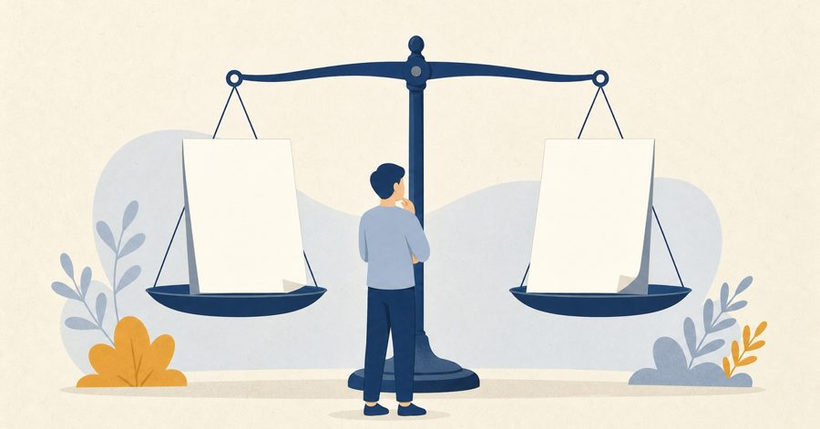

TOP 職場の悩み・退職
02 ／ WORKPLACE
職場の悩みを、整理する。
パワハラかもしれない。残業代が少ない気がする。辞めたいけれど言い出せない。記録の付け方、相談先、退職の進め方をまとめた棚です。
WORKPLACE道は、ほかにもある。


記録する
相談する





JOB CHANGE/WORKPLACE/AI AT WORK/BEFORE YOU BUY/JOB CHANGE/WORKPLACE/AI AT WORK/BEFORE YOU BUY/JOB CHANGE/WORKPLACE/AI AT WORK/BEFORE YOU BUY/
WHEN WORK HURTS
つらいとき、まず記録と相談
辞めるか決める前に、起きたことを残しておく。相談先の違いと、AIで作る相談メモも。


QUIT
辞めるか迷う、辞めると決めた
迷いを言葉にして整理する。決めたあとの伝え方、お金と手続き、退職代行。

この棚について。記事はnoteで無料で読めます。比較ページの一部には広告（アフィリエイトリンク）を含み、その場合はページ上部に表示しています。法律やお金の判断が必要なときは、労働局の総合労働相談コーナーや弁護士に相談してください。

MAGAZINE
noteのマガジンで、まとめて読む
職場の悩みの記事は、noteのマガジン「AIで職場の悩みを、記録して整理する」にまとめています。